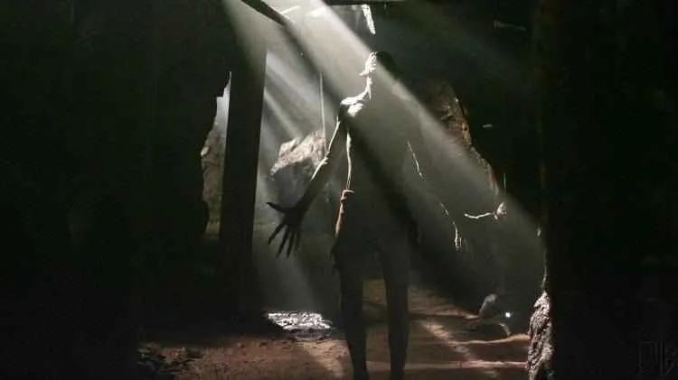
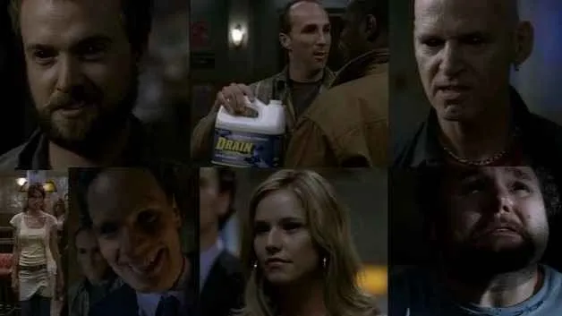
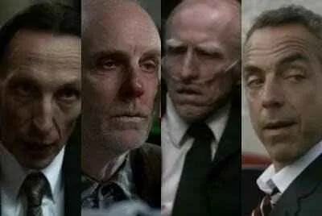
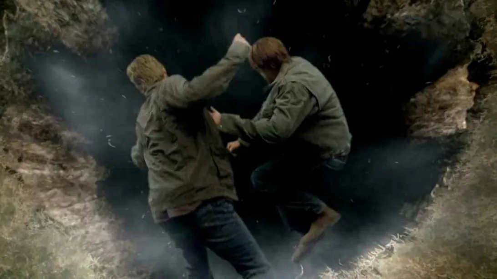
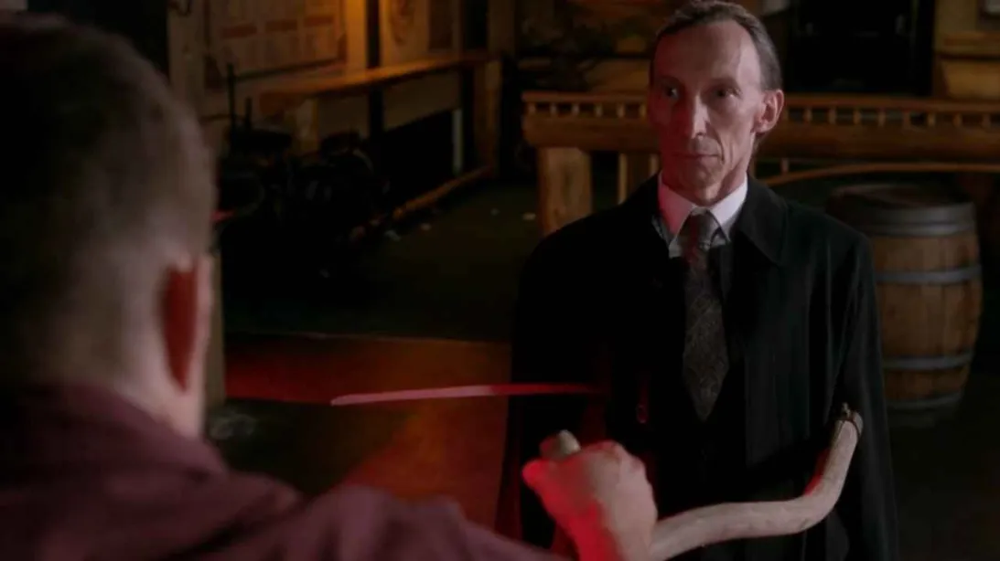

Wendigo
Os irmãos investigam o desaparecimento de diversos campistas nas florestas do Colorado e se deparam com um Wendigo uma criatura canibal com força surpreendente, lendária entre os nativos americanos. Dean e Sam conseguem com sucesso derrotá-lo ateando fogo a criatura até a morte.
Sete Pecados
As consequências da abertura da porta do inferno foram catastróficas, resultando na liberação de inúmeros demônios sobre a Terra. Em meio a essa nova ameaça, Dean, Sam e Bobby se veem em uma grande caçada desesperada para conter essa ameaça.
Durante essa missão, os três caçadores acabam cruzando o caminho de sete demônios com habilidades peculiares. Rapidamente, eles percebem que estão enfrentando os próprios sete pecados capitais, cada um manifestando uma forma perversa de pecado.
Os caçadores conseguem derrotar os demônios, destruindo alguns e forçando os outros a retornarem ao inferno. No entanto, a vitória é apenas um pequeno alívio, pois o impacto da abertura da porta do inferno ainda continua, trazendo novas ameaças a cada passo.
Cavaleiros do Apocalipse
Os Quatro Cavaleiros do Apocalipse trazem destruição sobre os últimos dias. Incluem Morte, Peste, Fome, Guerra.
Guerra: O Cavaleiro Guerra não é morto, mas sim neutralizado. Ele cria ilusões que levam as pessoas a se matarem, acreditando que estão lutando contra inimigos. Sam corta o anel de Guerra, que é a fonte de seu poder, e isso faz com que as ilusões desapareçam, neutralizando-o.
Fome: A Fome tem o poder de aumentar os desejos insaciáveis das pessoas até que elas se auto destruam. Dean e Sam confrontam a Fome, e Sam, com seu sangue demoníaco, consegue neutralizá-lo ao absorver as almas demoníacas que estavam ao redor. Assim como Guerra, a Fome não é morta, mas seu anel é retirado, neutralizando seu poder.
Peste: A Peste espalha doenças e vírus que podem destruir a humanidade. Sam e Dean conseguem distraí-lo o suficiente para roubar seu anel. Embora ele tente continuar sua missão, sem o anel ele perde seus poderes, e a Peste é finalmente neutralizada.
Morte: A Morte é diferente dos outros Cavaleiros, pois ele é uma entidade primordial extremamente poderosa e mais velha que o próprio Lúcifer. Dean consegue fazer um acordo com a Morte, que entrega seu anel voluntariamente, pois também deseja ver Lúcifer derrotado.
Sela de Lucifer
Sam consegue abrir o portal para a gaiola de Lúcifer usando os anéis dos Quatro Cavaleiros do Apocalipse. Durante a quinta temporada de Supernatural, Sam e Dean coletam os anéis de Guerra, Fome, Peste e Morte.
Quando os quatro anéis são reunidos, eles podem ser usados para criar um portal que leva diretamente à gaiola de Lúcifer, onde ele foi aprisionado por Deus no início dos tempos.Na cena final, após recuperar o controle sobre seu corpo graças às lembranças que Dean desperta, Sam junta os anéis e os joga no chão, abrindo o portal para a gaiola. Com o portal aberto, Sam se sacrifica, jogando-se nele, levando Lúcifer e Miguel junto, aprisionando-os novamente e encerrando o Apocalipse.
A Morte
Dean convoca a Morte para matá-lo e impedir que a Marca de Caim o transforme em uma ameaça. No entanto, a Morte revela que não pode matá-lo, pois a Marca o protege até mesmo da morte. Ela propõe remover a Marca, mas apenas se Dean transferi-la para outra pessoa, o que ele recusa. A Morte então oferece enviar Dean para um lugar distante, mas exige que ele mate Sam para evitar que ele tente trazê-lo de volta.
Dean engana Sam, mas no último momento, ao invés de matá-lo, empala a Morte com sua própria foice. A Morte se desintegra, mas a essência dela permanece, pois a morte em si não pode ser destruída.